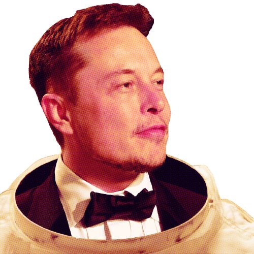
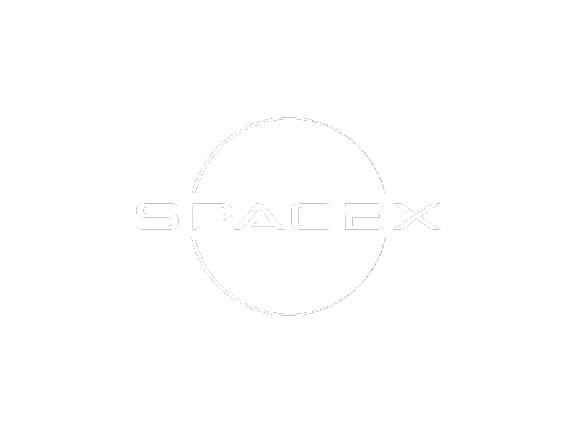
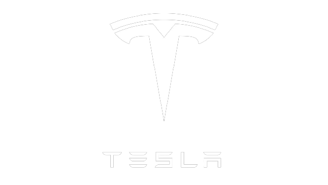

Who Is Elon Musk?

Elon Musk is a South African-born American entrepreneur and businessman who founded X.com in 1999 (which later became PayPal), SpaceX in 2002 and Tesla Motors in 2003. Musk became a multimillionaire in his late 20s when he sold his start-up company, Zip2, to a division of Compaq Computers. Musk made headlines in May 2012, when SpaceX launched a rocket that would send the first commercial vehicle to the International Space Station. He bolstered his portfolio with the purchase of SolarCity in 2016 and cemented his standing as a leader of industry by taking on an advisory role in the early days of President Donald Trump's administration. In January 2021, Musk reportedly surpassed Jeff Bezos as the wealthiest man in the world
Early Life
Musk was born on June 28, 1971, in Pretoria, South Africa. As a child, Musk was so lost in his daydreams about inventions that his parents and doctors ordered a test to check his hearing.
At about the time of his parents’ divorce, when he was 10, Musk developed an interest in computers. He taught himself how to program, and when he was 12 he sold his first software: a game he created called Blastar.
In grade school, Musk was short, introverted and bookish. He was bullied until he was 15 and went through a growth spurt and learned how to defend himself with karate and wrestling.
Family
- Musk’s mother, Maye Musk, is a Canadian model and the oldest woman to star in a Covergirl campaign. When Musk was growing up, she worked five jobs at one point to support her family.
- Musk’s father, Errol Musk, is a wealthy South African engineer.
- Musk spent his early childhood with his brother Kimbal and sister Tosca in South Africa. His parents divorced when he was 10.
Education
- At age 17, in 1989, Musk moved to Canada to attend Queen’s University and avoid mandatory service in the South African military. Musk obtained his Canadian citizenship that year, in part because he felt it would be easier to obtain American citizenship via that path.
- In 1992, Musk left Canada to study business and physics at the University of Pennsylvania. He graduated with an undergraduate degree in economics and stayed for a second bachelor’s degree in physics
- After leaving Penn, Musk headed to Stanford University in California to pursue a PhD in energy physics. However, his move was timed perfectly with the Internet boom, and he dropped out of Stanford after just two days to become a part of it, launching his first company, Zip2 Corporation in 1995. Musk became a U.S. citizen in 2002.
Companies
Musk launched his first company, Zip2 Corporation, in 1995 with his brother, Kimbal Musk. An online city guide, Zip2 was soon providing content for the new websites of both The New York Times and the Chicago Tribune. In 1999, a division of Compaq Computer Corporation bought Zip2 for $307 million in cash and $34 million in stock options.

In 1999, Elon and Kimbal Musk used the money from their sale of Zip2 to found X.com, an online financial services/payments company. An X.com acquisition the following year led to the creation of PayPal as it is known today.
In October 2002, Musk earned his first billion when PayPal was acquired by eBay for $1.5 billion in stock. Before the sale, Musk owned 11 percent of PayPal stock.

Musk founded his third company, Space Exploration Technologies Corporation, or SpaceX, in 2002 with the intention of building spacecraft for commercial space travel. By 2008, SpaceX was well established, and NASA awarded the company the contract to handle cargo transport for the International Space Station—with plans for astronaut transport in the future—in a move to replace NASA’s own space shuttle missions.
In January 2017, Musk launched The Boring Company, a company devoted to boring and building tunnels in order to reduce street traffic. He began with a test dig on the SpaceX property in Los Angeles.
In late October of that year, Musk posted the first photo of his company's progress to his Instagram page. He said the 500-foot tunnel, which would generally run parallel to Interstate 405, would reach a length of two miles in approximately four months.

Musk is the co-founder, CEO and product architect at Tesla Motors, a company formed in 2003 that is dedicated to producing affordable, mass-market electric cars as well as battery products and solar roofs. Musk oversees all product development, engineering and design of the company's products.
In August 2016, in Musk’s continuing effort to promote and advance sustainable energy and products for a wider consumer base, a $2.6 billion dollar deal was solidified to combine his electric car and solar energy companies. His Tesla Motors Inc. announced an all-stock deal purchase of SolarCity Corp., a company Musk had helped his cousins start in 2006. He is a majority shareholder in each entity.
“Solar and storage are at their best when they're combined. As one company, Tesla (storage) and SolarCity (solar) can create fully integrated residential, commercial and grid-scale products that improve the way that energy is generated, stored and consumed,” read a statement on Tesla’s website about the deal.